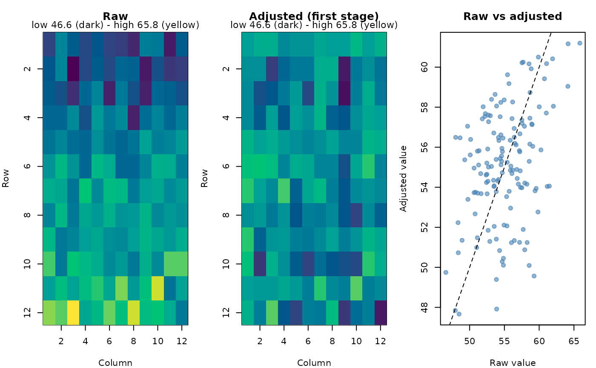

Puts each plot's raw value next to its first-stage value (the genotype's
adjusted mean plus the plot's residual, as in first_stage_values()),
summarises how much the first stage changed (per location: correlation of
raw and adjusted plot values, the spread before and after, and how much
the ranking of the genotypes changed) and draws, per location, the raw
and the adjusted field maps and a raw-versus-adjusted plot.
Arguments
- fit
An analysis (e.g.
analyze_augmented_row_column_design()withspatial = TRUE) or a two-stage analysis (analyze_two_stage(),analyze_augmented_prep_two_stage()), whose stage-1 fits are compared.- plot
Logical. Draw the plots.
- locations
For two-stage analyses: the locations to draw (default all).
Value
Invisibly, a list with plots (one row per plot: location, plot,
genotype, row, col, raw, adjusted, change) and summary (one row
per location). The summary is also printed.
Examples
rc <- augmented_row_column_design(paste0("G", 1:108), paste0("C", 1:4),
12, 12, 4, 4, n_candidates = 5, seed = 1)
d <- rc$design
set.seed(1)
d$yield <- 50 + 0.8 * d$row + rnorm(nrow(d), sd = 2)
fit <- analyze_augmented_row_column_design(d, "yield")
cmp <- compare_first_stage(fit)
#> Raw versus first-stage adjusted values:
#> location plots cor_raw_adjusted sd_raw sd_adjusted genotype_rank_cor
#> trial 144 0.384 3.6 2.89 0.314
#> top10pct_kept
#> 0.5
#> (genotype_rank_cor: Spearman correlation of genotype means; top10pct_kept: share of the raw top 10% still in the adjusted top 10%)
